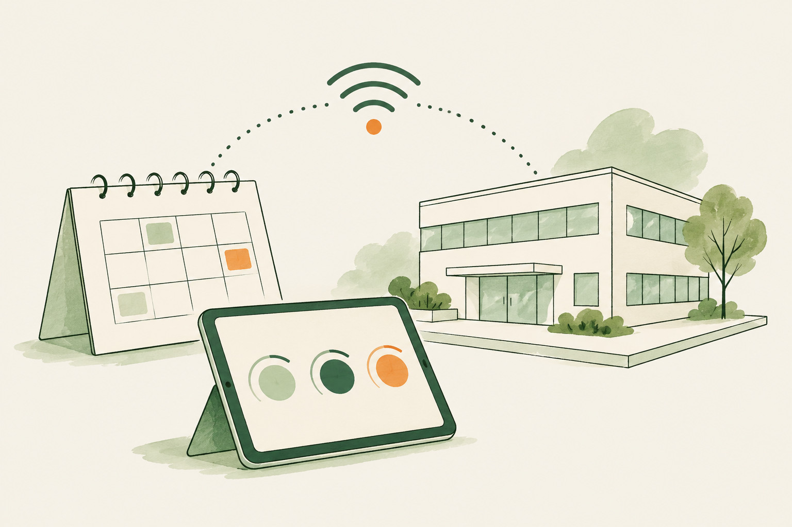

Frågor och svar.

Om IoNod och demon
Vad gör IoNod?
IoNod utvecklar fysiska noder och system för styrning, bokning och larm.
Behöver jag ett konto för att prova appdemon?
Nej, du kan prova IoNod Pump utan att logga in.
Påverkar demon en riktig pump?
Nej. Alla värden och ändringar är simulerade.
Vilken lösning passar?
Kan jag använda IoNod med min befintliga pump?
Det beror på pump, givare och uppkoppling. Kontakta oss för att kontrollera vad som fungerar i din anläggning.
Vem hjälper till med installationen?
En installatör kontrollerar anläggningen och ansluter IoNod där utrustningen är kompatibel.
Vad är BASx?
BASx är AI-stöd för BASTEC-system och finns som stängd alpha. Läs mer på BASx-sidan.
Pris
Vad kostar en lösning från IoNod?
Priset beror på anläggningen och vad som behöver installeras. Kontakta oss för ett prisförslag.